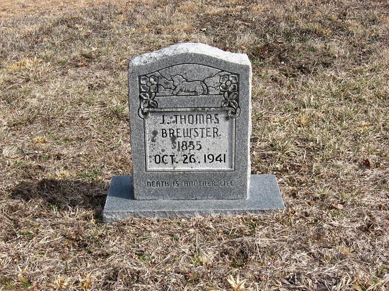

Brewster line · Fentress and Morgan Counties, Tennessee
Profile status: DOCUMENTED
Quick Facts
Born
16 December 1854, Fentress County, Tennessee DOCUMENTED (Tennessee death certificate; his headstone reads 1855, and the census trail puts his birth between 1853 and 1856 — see Research Notes.)
Died
26 October 1941, Morgan County, Tennessee DOCUMENTED (Tennessee death certificate #25286, informant his son Jesse; 1941 obituary in the Morgan County News)
Married
Mary Catherine Patton, about 1875, probably Morgan County UNPROVED (no marriage record survives — the Fentress courthouse burned in 1904 and Morgan County's records burned three times; the 1900 census "married 25 years" and a 1997 research query both give about 1875)
Second marriage
Mary E. Criswell, about 1922 UNPROVED (compiled research only; no marriage record found; widowed again by 1940; a different woman from Mary Catherine, and not the mother of his children)
Occupation
Ferry operator at Brewster Ford on the Clear Fork River, on the Jamestown road DOCUMENTED (1941 obituary; the Tennessee legislature later named the stretch of State Route 52 past the crossing the James "Thomas" Brewster Memorial Highway)
Military
No military service found (born 1854, too young for the Civil War)
Buried
Carpenter Cemetery — the old Nydeck Cemetery — near Robbins, Morgan County, Tennessee SUPPORTED (family records and his Find a Grave memorial; his headstone reads 1855 / Oct. 26, 1941)
James's parentage is documented by his own death certificate, which names John Brewster and Rebecca Farr. John was a Baptist preacher of the Clear Fork country, known as "Preacher Johnny." Geni's linked profile for his mother is titled "Rebecca 'Beckie' Brewster"; the About text there calls her Rebecca Farr.
Spouse
Mary Catherine Patton (12 January 1847–17 January 1917), married about 1875 UNPROVED Mary E. Criswell, married about 1922 UNPROVED
Do not conflate the two wives: the second marriage, about 1922, was to a different woman, Mary E. Criswell, after Mary Catherine's death. James's Geni About text carries the same warning, and no Geni profile is linked for Criswell.
Roster and birth dates follow Mary Catherine's own sworn list in her 1907 Eastern Cherokee application; the 1900 census confirms ten children, ten living. Geni's grids list twelve children, adding a "Private Brewster" and a "Jane Ellen McKinney" — neither appears in the sworn list or the 1900 count, and Jane Ellen likely duplicates Rebecca Jane (both shown married McKinney); neither is carried on this card. Geni also carries duplicate profiles for several children linked from Mary's profile; the links here use the father's grid. The 1900 census sons "Chas A" and "Walter J" read as Charley Albert and James Walter.
Siblings as shown on James's Geni profile; the couple profile does not name them. The family folder holds markers for Fairbea, George, Phoebe, and Sheron.
Gallery

James Thomas Brewster's headstone, Carpenter Cemetery, near Robbins. The stone reads 1855; his death certificate gives 16 December 1854.
16 December 1854 · age 0 Born, Fentress County, Tennessee DOCUMENTED
March 1874 · age 19 Canoed into the flooded Clear Fork and saved the Reverend A. B. Wright's horse — Wright wrote the rescue into his 1896 autobiography DOCUMENTED
About 1875 · age 20 Married Mary Catherine Patton, probably Morgan County UNPROVED (no record survives)
1876–1895 · ages 21–40 Ten children born at Brewstertown, from John Samuel to Jacob Abraham DOCUMENTED (Mary Catherine's sworn list; 1900 census: ten children, ten living)
About 1880 · age 25 Settled the hollow near Rugby that became Brewstertown, with his wife and his father SUPPORTED
17 January 1917 · age 62 Mary Catherine died at Rugby; James widowed DOCUMENTED (her Tennessee death certificate)
About 1922 · age 67 Married Mary E. Criswell UNPROVED; widowed again by 1940
26 October 1941 · age 86 Died, Morgan County, Tennessee DOCUMENTED
Buried Carpenter Cemetery — the old Nydeck Cemetery — near Robbins SUPPORTED
Life Story
James Thomas Brewster was born on 16 December 1854 in Fentress County, Tennessee, the son of John W. "Preacher Johnny" Brewster, a Baptist preacher of the Clear Fork country, and Rebecca Farr. His birth year is carried three ways across the records — his death certificate gives 16 December 1854, his headstone reads 1855, and the census trail puts him between 1853 and 1856 — but the date itself, 16 December, is consistent. He grew up on the Clear Fork, where his father preached and held land granted in the 1820s–1830s.
In March 1874, when he was nineteen, he canoed into the flooded Clear Fork and saved the horse — and, by the telling, nearly the life — of the Reverend A. B. Wright, who wrote the rescue into his 1896 autobiography. About 1875 he married Mary Catherine Patton, probably in Morgan County, though no marriage record survives: the Fentress courthouse burned in 1904 and Morgan County's records burned three times. Around 1880 James, his wife, and his father settled the hollow near Rugby that became Brewstertown, and James ran the ferry at Brewster Ford on the Clear Fork, on the Jamestown road — his 1941 obituary records that he operated the ferry there, and the Tennessee legislature later named the stretch of State Route 52 past the crossing the James "Thomas" Brewster Memorial Highway. James and Mary Catherine raised ten children at Brewstertown.
Mary Catherine died on 17 January 1917 at Rugby. James married a second time, about 1922, to Mary E. Criswell — a different woman, not the mother of his children — and was widowed again by 1940. He lived on at Brewstertown into his eighties, and died on 26 October 1941 in Morgan County, aged eighty-six. He is buried at Carpenter Cemetery near Robbins. The photograph above is a faded old photograph of James and Mary Catherine together, from the Brewster reunion group.
Sources and Evidence
Tennessee death certificate #25286, informant his son Jesse: born 16 December 1854, Fentress County; died 26 October 1941, Morgan County; parents John Brewster and Rebecca Farr DOCUMENTED
1941 obituary, Morgan County News: ferry operator at Brewster Ford on the Jamestown road; "widely known throughout Morgan and Fentress Counties"; leaves eight children DOCUMENTED
Reverend A. B. Wright's Autobiography (1896), pp. 120–121: the March 1874 Clear Fork rescue by young Thomas Brewster DOCUMENTED
Tennessee House Joint Resolution 5003 (1996): names James "Thomas" Brewster, his wife Mary, and his father Preacher Johnny as the settlers of about 1880, and names the Memorial Highway SUPPORTED (a commemorative resolution, not a vetted historical document)
Mary Catherine's sworn list in her 1907 Eastern Cherokee application (NARA M1104, Reel 332, No. 43484): ten children with birth dates; 1900 census, Morgan County ED 109 household 193: ten children, ten living DOCUMENTED
Geni profiles, click-verified 4 November 2026: parents Rev John W. Brewster and Rebecca 'Beckie' Brewster; spouse Mary Catherine Brewster; twelve children in the grids including a "Private Brewster" and a "Jane Ellen McKinney" not in the sworn list; About text warns not to conflate the 1922 Criswell marriage SUPPORTED
Find a Grave memorial 34506529: James Thomas Brewster, born 1854 Tennessee, died 26 October 1941 Robbins, buried Carpenter Cemetery, Morgan County; spouse Mary Catherine Patton Brewster SUPPORTED
Headstone photograph, Carpenter Cemetery: "J. THOMAS BREWSTER / 1855 / OCT. 26, 1941 / DEATH IS ANOTHER LIFE" DOCUMENTED (the stone's own reading; birth year differs from the death certificate)
Second marriage: compiled research names Mary E. Criswell, about 1922; no marriage record found; widowed again by 1940 UNPROVED
Marriage about 1875: no record; 1900 census "married 25 years" and a 1997 research query both give about 1875, probably Morgan County; a FamilySearch entry of 1874 at Elgin, Scott County is pre-existing and unsourced, and is not adopted UNPROVED
Grades: DOCUMENTED an original record says it · SUPPORTED several records point to it · FAMILY ACCOUNT the family's own telling · UNPROVED a lead, not proved.
Research Notes and Open Questions
Birth year: death certificate 16 December 1854; headstone 1855; census trail 1853–1856, including the 1900 census head "Thos J Brewster," 47, born August 1853. The page uses the death certificate's date.
William's page correction: William Alexander Brewster's Parents card carried James's death as 1938. The death certificate, the 1941 obituary, the headstone, and Find a Grave all give 26 October 1941, so the card is corrected to 1941 in the same pass that links these pages.
Geni's twelve children: the grids add a "Private Brewster" and a "Jane Ellen McKinney" to the sworn ten, and Mary's profile links duplicate profiles for several children. The card follows the sworn ten; the extras are not adopted and are flagged for a ruling. Find a Grave's list matches the sworn ten with name variants (Jane Ellen in the Becky Jane slot; Mary Laurendy "Polly" Berry; Charles Albert "Abb").
Second wife: Mary E. Criswell, about 1922, rests on compiled research only. James's Geni About text warns against conflating her with Mary Catherine; no Geni profile is linked for her, and none is linked here.
Marriage: about 1875, probably Morgan County, is unproved — no record survives the courthouse fires. The FamilySearch 1874 Elgin, Scott County entry is not adopted.
Lore not carried: Mary Catherine's saying "No one owns the earth, we are to take care of it, live in peace"; a "Civil War-era" dating for the ferry (the ferry itself is documented, the dating is lore); Johnny as the "first Brewster elder to live in Brewstertown"; and a story that a Brewster reached Rugby before the recorded Thomas (untestable lore, not developed). A dispute over a book titled "Orphan No More" is not carried.
James's own family-history text, reportedly written about 1939 and transcribed by his daughter Lola, has not been located; it is the top pull for the John W. Brewster × Rebecca Farr pass.
Above James: James Gray Brewster Sr. and Phoebe Cox are Preacher John's parents per compiled research; the Jeremiah-to-James Gray link is probable but unproved, and Jeremiah's own father (Comfort versus Ebenezer II) is unproved — all for a later pass, not carried here beyond this note.
Photographs: no portrait of James alone has been found; the hero photograph shows James and Mary Catherine together in a faded old photograph from the Brewster reunion group. Place photographs in the folder (bridges, ferry sites, cemetery entrances, the store) are not shown on this page. The store photograph in the folder was the couple's son Jesse's store, not theirs.
The shared edit box carried on earlier generation pages is not shown here: no shared document for this generation has been confirmed. Corrections can go in the couple folder.
Profile history: Created 4 November 2026 from the family couple profile and research notes.